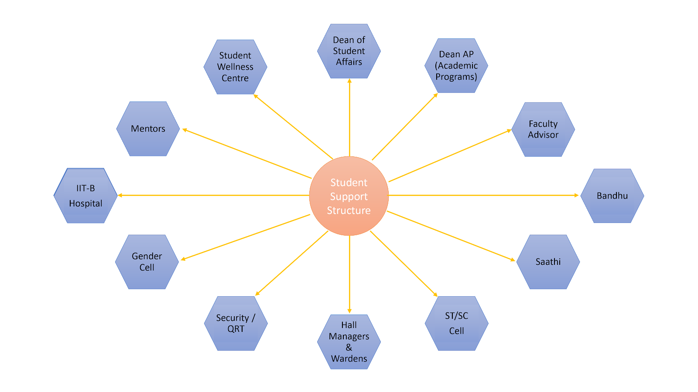

Faculty Advisor
Faculty Advisors (FacAd), as the name suggests, are professors from your respective departments, who will help you out in making academic decisions. FacAds keep track of your progress and will guide you properly. Each semester, the courses you take will be finalized only with the consent of the FacAds. Changes in the program, such as dropping of courses, withdrawal from a semester on medical advice etc., can be affected only with the consent of the FacAd. As you grow older in the IIT system, you might have to make some tough decisions regarding coursework and programs in order to choose a career path suitable to your interests. If you intend to change your branch/specialization after the 1st year, your FacAd is the right person to approach. You may also have to seek the FacAd's permission to participate in inter-collegiate competitions. FacAd is an important link between you and your department. Do not hesitate to talk to them regarding any academic issues.
Medical
Worried about what to do if you get sick while you’re in IIT-B? You don’t need to at all. The great thing about IIT-B is that it has a hospital inside the campus which will take care of almost all common medical problems you might face. To understand more about how the healthcare works at IIT, click here:
How do I enroll for medical facilities?
You are eligible for medical facilities as soon as you are admitted to IIT-B. As you get admitted, you are required to fill in your medical details in a booklet and get yourself vaccinated against certain diseases (I’ll mention about these later). The IIT-B hospital (or “hospi” as we call it here) maintains a medical file for each student to document all of their consultations, prescriptions and medical history. Every time you visit the hospital, you will need this file. In case you choose to keep it with you at your room (which is alright too) don't forget to bring it along.
What to do if I fall sick or have a medical emergency?
There is a 24/7 ambulance facility available for all students. For calling an ambulance you can call 1110 from any internal phone. One is placed at the security guard’s desk in every hostel. If you are not in an emergency, you will be required to visit a GP based on a token system or through appointments. Based on their medical evaluation you will be recommended to a specialist if need be.
How expensive is the treatment?
All of the medical facilities including prescription medicines are free for IIT students, covered by the annual insurance that you pay with the fees in the odd (Autumn) semester. This insurance also covers you for an amount of close to Rs 50,000 in medical expenses in case you need to be referred to an outside hospital. Even the cost of medicines purchased from a chemist and charges for lab tests can be reimbursed when prescribed by a doctor from the IIT hospital (or from a hospital recognised by IIT - the list of which can be found at
http://www.iitb.ac.in/hospital/index.html)
What facilities are available at the hospital?
-
OPD in the hospital that runs from 8 am to 6 pm on weekdays and till 1 pm on weekends
-
The Emergency Ward handles medical cases outside these hours.
-
Pathology and X-Ray facilities
-
There is also a facility for Physiotherapy to deal with fractures and other such ailments.
If an MRI or CT scan is required, the IIT hospital refers you to the nearby Hiranandani Hospital (HN) which is less than a kilometer away. Specialist doctors from HN hospital visit the IIT hospital on an appointment basis. For cases that the IIT hospital is not equipped cannot handle, patients are transferred to the HN hospital.
What if I lose classes or exams because I am sick?
If you fall sick and are advised to rest by the doctor and hence cannot attend lectures or write examinations, the doctor will give you a "pink slip". This slip is the only trusted proof that you were sick and advised rest. In case you missed an end semester exam, you will be given an II grade. This means that you are eligible for a re-examination. Presenting the pink slip to your professor will let him allow you to take the exam again. This system is unremittingly strict and a recommendation from any other doctor or hospital will simply not do.
What vaccinations do I need?
There are 4 vaccines which you need to be administered with during your stay here. These are :
- MMR
- Typhoid
- Hepatitis A
- Chicken Pox
You can either get them administered from your local doctor in your hometown. In this case you need to show a certificate of vaccination of the same when you fill the medical booklet. If you were unable to get the vaccines, the IITB Hospital arranges a vaccination camp once every month in the Autumn ( Odd ) semester (July - November) where you can get yourself vaccinated. These vaccine costs are not covered in your medical treatment costs. Important Links:
If the above information was unable to clear your doubts and you still have queries you can visit the links below for more information:
IIT-B Hospital website can be found
here
Hospital Guidebook can be found
here
Hospital Contact Card:
IIT Hospital,
IIT Bombay,
Powai, Mumbai,
Pincode - 400076,
Tel : 25767051 / 53
To know more about Hospital, visit
https://gymkhana.iitb.ac.in/hostels/hospital.
QRT
The Quick Response Team deals with issues where students feel that immediate/urgent intervention is needed or the involvement of additional security is required. If you encounter such a situation then you can reach out to QRT using the following helpline numbers: 9167398598, 9167398599
To know more about the security guidelines at IIT Bombay or contact QRT, visit
https://gymkhana.iitb.ac.in/hostels/security.
SWC
Being away from home and taking on new responsibilities can sometimes be overwhelming. It is at such times that we require someone to guide us. The Student Wellness Centre consists of counselors who provide one-on-one meetings to students. Students are helped to explore and express feelings, reflect on patterns of behavior, and work toward making healthier changes.
For more details, visit
http://www.iitb.ac.in/swc/en.
SC/ST Cell
The SC/ST Students Cell addresses academic and non-academic issues and complaints received from students in reserved categories. The institute strives to maintain an environment where all communities can participate in academic and research activities without any sort of discrimination with respect to caste or creed. In order to maintain such an atmosphere, the SC/ST students cell is responsible for sensitizing the campus community about the importance of having diversity.
Student-victims are free to write to this email:
scstcell@iitb.ac.in. In addition to by email, one can also consider filing an anonymous complaint at the website:
https://goo.gl/forms/F3BKMxkdGu28OGRz2
Gender Cell
The Gender Cell works proactively towards developing a safe and secure environment for employees, and to ensure that all students may gain their education without fear of prejudice, gender bias, hostility or sexual harassment. The IIT Bombay Gender Cell (GC) inquires into complaints of sexual harassment through its Internal Complaints Committee (GC-ICC).
Find more details
here.
Saathi
With the onset of puberty, one grows more conscious of the changes happening in their own body as well as their feelings towards others. Unlike others, some of us may not feel comfortable with the gender assigned to us at birth. Similarly, not everyone is attracted only to people of the opposite sex.
Some labels commonly used by people to describe themselves are lesbian, gay, bisexual, asexual, transgender, intersex, and queer. Collectively, people who lie outside the typical gender identity and sexuality are known as the LGBTQ+ community. Being a minority, they feel alone, confused and excluded from the mainstream. They may also face discrimination and bullying on revealing their preferences. At IIT Bombay, however, no student needs to feel alone.
Saathi (‘companion’) at IIT Bombay is an LGBTQ+ support and resource group. We are committed to providing a community for LGBTQ+ individuals on campus. We organize events all through the year such as workshops, awareness days, movie screenings and informal meetups. Most of these events are open to all, irrespective of gender identity or sexual orientation. Even if you identify as straight (as many of our members do), these events will be a great place to know more about the community and learn how to be great allies and support your LGBTQ+ friends.
All our events are safe spaces wherein we even do not ask anyone their sexuality or gender identity. However, we understand that you may be apprehensive of your identity being disclosed outside the group. You can still get in touch with us via e-mail or Facebook. To remain up-to-date with our events and other information, join our Google group, look up ‘Saathi, IIT Bombay’ on Google Groups or send an email at
saathi-iitb+subscribe@googlegroups.com. If required, you can also contact us on +91-7738452988, with your anonymity completely assured.
We invite you to be a part of Saathi, irrespective of your gender or orientation. We hope that your stay at IIT Bombay will be as bright and vibrant as the colours of the rainbow!
http://www.facebook.com/saathi.iitb
saathi.iitbombay@gmail.com